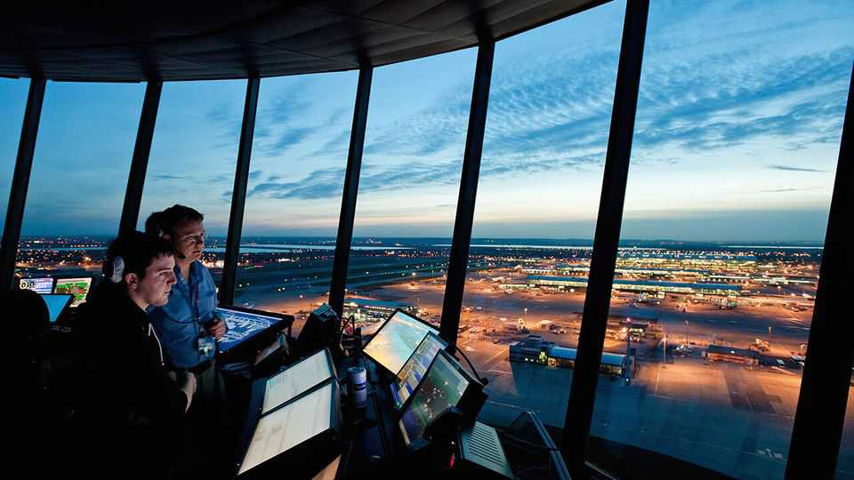

Fewer contrails would be good for the climate
It could take care of at least a little global warming

Aug 20th 2026
Good news on global warming is thin on the ground. But there may be some up in the air. Operation Blue Skies, announced on August 18th, is a scientific study being undertaken by Britain’s air-traffic-control service, NATS, and various organisations where people study the effects on climate of the streaks of cloud created by aircraft—known as contrails.
Over the next two winters the consortium aims to see if it is possible to reduce the number of persistent contrails—the class with the largest such effects—over a swathe of the North Atlantic, thereby measurably reducing the climate impact of civil aviation. If this experiment works, a worldwide application of the same techniques might cut the climate effects of air travel by as much as half.
On a sunny day the wispy cirrus clouds into which some contrails are transformed can look as if they might be cooling the planet in the manner of a delicate parasol. And some contrails do indeed cool things down beneath them a bit. But they also warm things up by trapping some of the upwelling infrared radiation that would otherwise escape into space. On average, that warming effect, found in all contrails (and the cirrus clouds they turn into), handsomely outweighs the cooling provided by some. In the climate scheme of things, contrails are a liability.
Happily, it appears that much harm can be avoided by small changes to flight paths. Persistent contrails appear only in what are known as “ice-supersaturated regions” (ISSRs). Often planes can avoid such regions just by flying a little bit lower. The purpose of Operation Blue Skies is to find out how well the presence of ISSRs can be predicted, how effective such little shifts in altitude can be in avoiding persistent contrails, and how easily and safely the changes in flight path needed to bring them about can be integrated into routines for airlines and air-traffic control.
The cut of up to half in the climate-effects of air travel would come at a very small cost. The number of flights at lowered altitude might be small—as little as 5% of the total. Because altitude buys efficiency, those flights would consume more jet fuel, but less than 2% more.
Burning even that little extra fuel would be anathema to airlines. So some suggest the costs of action might be minimised, and the airlines incentivised, by setting up a market which somehow links contrail cooling to carbon prices. The European Union, which has had some success and plenty of experience with carbon markets, recently took a small step towards something along these lines. It is also the sort of idea to which economists—and The Economist—tend to be partial. But it would be a mistake nonetheless.
Markets for pollutants have worked best when both the aim and the remedy are fairly simple—most famously, reducing sulphur-dioxide emissions from power stations in America. Contrails, by contrast, are complicated. Though there is no doubt that their net effect is warming, saying how much warming a particular contrail might produce is often difficult and sometimes next to impossible.
The difficulties are made yet worse when the contrail being assessed is a purely notional one—as would be the case for the contrails avoided by changing flight paths. Valuing counterfactuals is always hard.
If contrail-avoidance turns out to be as useful as it looks, it would be much simpler to simply have air-traffic controllers assign routes that limit persistent contrails when it is possible and safe to do so. If some airlines choose to avoid the affected routes, others will surely be happy to take their place. And if such a scheme were also to show the benefits of innovations in air-traffic control (quite a few have been suggested) the industry would end up better off, as well as less polluting. ■